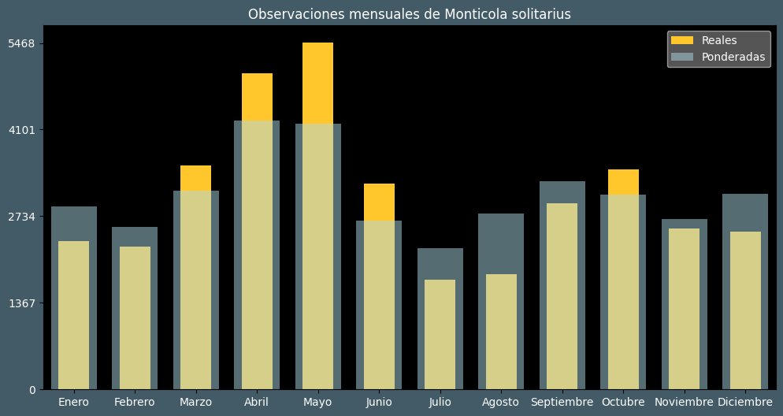

Observaciones por mes
Observations por hora

Categoría IUCN: ?
Género: Monticola
Familia: Muscicapidae
Orden: Passeriformes
Descubrimiento: Linnaeus (1758)
| Idioma | Nombre |
|---|---|
| Afrikaans (af) | ? |
| Arabic (ar) | سمنة الصخور الزرقاء |
| Belarusian (be) | ? |
| Bulgarian (bg) | Син скален дрозд |
| Catalan (ca) | Merla blava |
| Chinese (zh) | 蓝矶鸫 |
| Chinese traditional (zh-TW) | 藍磯鶇 |
| Croatian (hr) | Modrokos |
| Czech (cs) | Skalník modrý |
| Danish (da) | Blådrossel |
| Dutch (nl) | Blauwe rotslijster |
| English (en) | Blue rock thrush |
| Estonian (et) | Sini-kivirästas |
| Finnish (fi) | Sinirastas |
| French (fr) | Monticole bleu |
| German (de) | Blaumerle |
| Greek (el) | Γαλαζοκότσυφας |
| Hebrew (he) | צוקית בודדת |
| Hungarian (hu) | Kék kövirigó |
| Icelandic (is) | Bláþröstungur |
| Indonesian (id) | Murai-batu arung |
| Italian (it) | Passero solitario |
| Japanese (ja) | イソヒヨドリ |
| Korean (ko) | 바다직박구리 |
| Latvian (lv) | Zilais akmeņstrazds |
| Lithuanian (lt) | Mėlynasis akmeninis strazdas |
| Maceodnian (mk) | Модар дрозд |
| Malayalam (ml) | നീലപ്പാറക്കിളി |
| North_sami (se) | Alitrásttis |
| Norwegian (no) | Blåtrost |
| Persian (fa) | طرقه کبود |
| Polish (pl) | Modrak śródziemnomorski |
| Portuguese (pt) | Melro-azul |
| Russian (ru) | Синий каменный дрозд |
| Serbian (sr) | Modrokos |
| Slovak (sk) | Skaliar modrý |
| Spanish (es) | Roquero solitario |
| Swedish (sv) | Blåtrast |
| Thai (th) | นกกระเบื้องผา |
| Turkish (tr) | Gökardıç |
| Ukrainian (uk) | Скеляр синій |